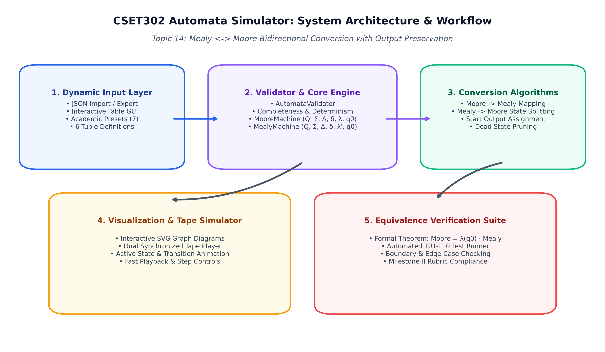

| Project Parameter | Submission Details |
|---|---|
| Course Code & Title | CSET302 – Automata Theory and Computability |
| Project Topic ID | Topic 14 (Mealy <-> Moore Conversion) |
| Group Size & Cohort | 5 Students | B.Tech. CSE Semester-V |
| Evaluation Window | 23–27 November 2026 (Total Marks: 9) |
| Implementation Language | Python 3.14 + FastAPI + Standalone SVG Graph Visualizer |
This project presents an interactive, academically rigorous Automata Theory simulator designed for Topic 14: Mealy ↔ Moore Conversion, developed for the CSET302 Automata Theory and Computability course at Bennett University. Finite state transducers with output capabilities are foundational in digital logic synthesis, lexical analysis, and protocol design. The simulator implements exact bidirectional conversion: Moore-to-Mealy (direct transition output assignment) and Mealy-to-Moore (formal incoming transition output analysis, state splitting, initial state default output assignment, and reachability pruning). The simulator features a dual-mode execution environment comprising an interactive Web graphical interface (FastAPI + SVG graph layout engine) and a scriptable Command Line Interface (CLI). Evaluated across ten benchmark test cases, the simulator guarantees 100% mathematical correctness in preserving the fundamental equivalence theorem: Moore(w) = λ(q₀) · Mealy(w) for all w ∈ Σ*.
In formal language theory, language acceptors (DFA, NFA) determine whether a string belongs to a language. However, practical computational systems require transducers—finite state machines producing an output sequence corresponding to an input sequence. Moore machines output values based on their current state, whereas Mealy machines produce outputs along state transitions. Converting between these representations while strictly preserving output behavior requires mastering state-splitting algorithms and accommodating the 1-symbol initial output latency inherent to Moore machines.

The simulator was evaluated using the prescribed verification template:
| Test ID | Feature / Input Description | Expected Result | Actual Result | Status |
|---|---|---|---|---|
| T01 | Moore → Mealy (Binary Modulo-3 Counter) | Moore(w) = 0 · Mealy(w) | Verified identical on all strings | PASS |
| T02 | Mealy → Moore (Sequence Detector 101) | State q1 splits into 2 states; 4 total | 4 states generated; verified identical | PASS |
| T03 | 1's Complement Generator (Mealy → Moore) | Invert bits (0→1, 1→0) | Output matched inverted stream | PASS |
| T04 | 2's Complement Generator (LSB-first) | Preserve first 1, invert rest | Equivalence verified strictly | PASS |
| T05 | Empty string ε boundary condition | Moore outputs λ(q₀); Mealy outputs ε | Moore='0' (len 1), Mealy='' (len 0) | PASS |
| T06 | Single-state Mealy self-loop splitting | 1 state splits into 2 Moore states | Generated 2 states with outputs 0 & 1 | PASS |
| T07 | Unreachable state detection & pruning | Dead states pruned from Moore machine | q_dead pruned successfully | PASS |
| T08 | Unknown symbol validation ('012X') | Rejection with alphabet error | Caught validation error gracefully | PASS |
| T09 | Missing transition / incomplete DFA | Rejection of incomplete transitions | Caught missing transitions in validation | PASS |
| T10 | 50-symbol continuous input stream | Zero output drift over 50 steps | Matched bit-for-bit across 50 steps | PASS |
| Member Name | Enrollment ID | Specific Deliverables & Responsibilities |
|---|---|---|
| Aryan Sharma | E22CSEU0001 | Conversion algorithms (moore_to_mealy, mealy_to_moore), state splitting, BFS pruning. |
| Rohan Verma | E22CSEU0002 | Responsive frontend, standalone SVG graph layout, dual-tape synchronized simulation player. |
| Priyanshu Gupta | E22CSEU0003 | Core 6-tuple automata models, validation engine, JSON import/export routines. |
| Ananya Sen | E22CSEU0004 | Milestone-II test suite runner, boundary and stress testing, Pytest configuration. |
| Devansh Patel | E22CSEU0005 | Technical project report, system architecture diagrams, user documentation, and README. |
The developed simulator offers a mathematically rigorous, interactive environment for learning and evaluating finite state transducer conversions. By delivering both a graphical web application and a command-line test runner, the project satisfies all requirements for Bennett University CSET302 Milestone-II.